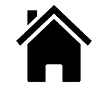

About Houses
A house is a single-unit residential building. It may range in complexity from a rudimentary hut to a complex structure of wood, masonry, concrete or other material, outfitted with plumbing, electrical, and heating, ventilation, and air conditioning systems.
Houses use a range of different roofing systems to keep precipitation such as rain from getting into the dwelling space. Houses generally have doors or locks to secure the dwelling space and protect its inhabitants and contents from burglars or other trespassers. Most conventional modern houses in Western cultures will contain one or more bedrooms and bathrooms, a kitchen or cooking area, and a living room. A house may have a separate dining room, or the eating area may be integrated into the kitchen or another room. Some large houses in North America have a recreation room. In traditional agriculture-oriented societies, domestic animals such as chickens or larger livestock (like cattle) may share part of the house with humans.